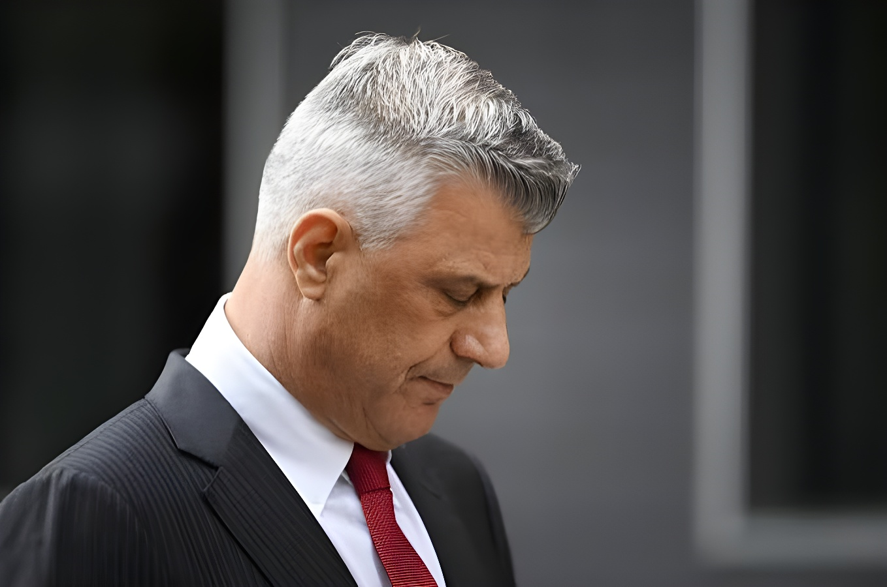

Le 16 septembre 2026, la Chambre spécialisée pour le Kosovo, tribunal siégeant à La Haye, a reconnu l'ancien président kosovar Hashim Thaçi coupable de meurtre, torture, traitements cruels et détention arbitraire, et l'a condamné à 25 ans de prison. Trois autres anciens dirigeants de l'Armée de libération du Kosovo (UÇK) — Kadri Veseli, Jakup Krasniqi et Rexhep Selimi — ont également été condamnés à l'issue d'un procès de trois ans portant sur des crimes commis pendant et après la guerre de 1998-1999. Le verdict, qui vise pour la première fois d'anciens combattants érigés en héros de l'indépendance, a provoqué des scènes de colère à Pristina et rouvre un débat mémoriel sensible dans les Balkans.
Hashim Thaçi, 58 ans, avait dirigé le Kosovo comme Premier ministre puis comme président, après avoir été durant la guerre le chef de la branche politique de l'UÇK, la guérilla séparatiste albanaise du Kosovo qui a combattu les forces serbes en 1998-1999. Figure de la déclaration d'indépendance de 2008, il avait été salué par l'ancien vice-président américain Joe Biden comme le « George Washington du Kosovo ». Inculpé en 2020 par la Chambre spécialisée pour le Kosovo, il a immédiatement démissionné de la présidence et s'est rendu volontairement à La Haye, où il est resté détenu près de six ans dans l'attente du jugement, aux côtés de Kadri Veseli (ancien chef du renseignement et président du Parlement), Jakup Krasniqi (ancien porte-parole de l'UÇK et président du Parlement) et Rexhep Selimi (ancien commandant opérationnel et ministre).
Le procès, ouvert en 2023, a duré trois ans. Les quatre hommes ont plaidé non coupables de l'ensemble des chefs d'accusation, qui portaient sur des crimes commis dans des centres de détention de l'UÇK au Kosovo et dans l'Albanie voisine, ainsi que sur des assassinats à caractère politique visant des civils serbes, albanais et roms. Leur défense a fait valoir que l'UÇK ne disposait pas d'une chaîne de commandement structurée et que ses dirigeants ne pouvaient donc être tenus responsables des agissements de combattants isolés — un argument que les juges ont rejeté.
Présidée par le juge américain Charles Smith, la Chambre a jugé que Thaçi, Veseli, Krasniqi et Selimi avaient contribué de façon significative à une entreprise criminelle commune visant les opposants réels ou supposés au projet politique et militaire de l'UÇK — y compris des Albanais accusés de « collaboration ». Les quatre hommes ont été reconnus responsables de la détention arbitraire d'au moins 385 personnes, de la torture de plus de 300 détenus et du meurtre de 96 personnes. Ils ont en revanche été acquittés des six chefs de crimes contre l'humanité, les juges estimant que l'accusation n'avait pas démontré l'existence d'une attaque généralisée et systématique contre des populations civiles.
| Accusé | Fonction pendant la guerre | Peine prononcée |
|---|---|---|
| Hashim Thaçi | Chef de la direction politique de l'UÇK | 25 ans de prison |
| Jakup Krasniqi | Porte-parole de l'UÇK | 25 ans de prison |
| Kadri Veseli | Chef du renseignement de l'UÇK | 18 ans de prison |
| Rexhep Selimi | Commandant opérationnel de l'UÇK | 13 ans de prison |
Guerre du Kosovo entre l'UÇK et les forces serbes, qui fait environ 13 000 morts et se termine par l'intervention de l'OTAN. Près de 1 600 personnes restent aujourd'hui portées disparues.
Le rapport Dick Marty pour le Conseil de l'Europe accuse d'anciens cadres de l'UÇK, dont Hashim Thaçi, de graves exactions pendant et après le conflit.
Le Parlement kosovar crée la Chambre spécialisée pour le Kosovo (KSC), tribunal hybride siégeant à La Haye. Elle devient pleinement opérationnelle en 2017.
Hashim Thaçi est inculpé de crimes de guerre et de crimes contre l'humanité. Il démissionne de la présidence et se rend à la Chambre spécialisée, où il est placé en détention.
Ouverture du procès de Thaçi, Veseli, Krasniqi et Selimi devant la Chambre spécialisée.
Clôture des débats. Thaçi affirme devant les juges avoir « toujours été guidé par les idéaux occidentaux de démocratie, d'égalité et de justice ».
La Chambre rend son verdict : les quatre accusés sont reconnus coupables de crimes de guerre et condamnés à des peines allant de 13 à 25 ans de prison.
Le jugement était attendu avec une tension extrême à Pristina, où des comptes à rebours géants avaient été installés sur les places publiques et où des milliers de partisans de Thaçi s'étaient rassemblés pour suivre la retransmission en direct, convaincus d'un acquittal. Lorsque le verdict de culpabilité est tombé, la foule a hué et scandé « UÇK », avant qu'un cortège ne se dirige vers le siège d'EULEX (la mission européenne « État de droit ») à Fushë Kosovë, où des vitres ont été brisées par des manifestants masqués. La police spéciale kosovare a empêché toute intrusion dans le bâtiment ; une personne a été interpellée.
Le Premier ministre Albin Kurti, réélu deux jours plus tôt, a qualifié la condamnation d'« injustice inacceptable » pour la guerre de libération du Kosovo. Le ministre des Affaires étrangères Glauk Konjufca, présent à l'audience, a jugé le verdict « injuste » et « immérité ». Le Premier ministre albanais Edi Rama a lui aussi dénoncé une décision « honteuse ». La France, en revanche, a pris acte du jugement en réaffirmant son soutien à la Chambre spécialisée et son engagement contre l'impunité.
« Il a utilisé sa position, son autorité et son influence pour encourager les crimes. »
— Juge Charles Smith, président de la Chambre, 16 septembre 2026« La condamnation de quatre anciens dirigeants de l'UÇK est un châtiment injuste et néfaste. »
— Albin Kurti, Premier ministre du KosovoLe juge Smith a pris soin de préciser que le procès ne portait « pas sur la légitimité » de l'UÇK ni sur son objectif d'indépendance du Kosovo, alors province de la Serbie. Mais la Chambre spécialisée reste, pour une large partie de la population kosovare, une institution profondément impopulaire : hybride, financée par l'Union européenne et composée de juges et procureurs internationaux pour protéger des témoins jugés vulnérables face à d'anciennes tentatives d'intimidation, elle est accusée d'utiliser des éléments de preuve transmis par Belgrade, qui ne reconnaît toujours pas l'indépendance du Kosovo.
| Juridiction | Nature | Rôle dans l'affaire |
|---|---|---|
| Chambre spécialisée (KSC) | Tribunal kosovar à juges internationaux, siégeant à La Haye | Juge les crimes visés par le rapport Marty (1998-2000) |
| EULEX | Mission de l'UE « État de droit » au Kosovo | Appui judiciaire local ; siège visé par des manifestants |
| Task Force d'enquête UE | Enquête préparatoire (2011-2014) | A réuni les preuves ayant mené aux inculpations |
Au-delà du sort judiciaire de quatre hommes, ce verdict touche au cœur du récit que le Kosovo se raconte depuis son indépendance : celui d'une guérilla exclusivement héroïque, opposée à une répression serbe elle-même reconnue par la justice internationale. En établissant que des crimes ont aussi été commis par l'UÇK contre des Albanais jugés « collaborateurs » et contre des civils serbes et roms, la Chambre spécialisée ne remet pas en cause la légitimité de la lutte pour l'indépendance, mais elle complique durablement sa mémoire. Le dossier n'est pas clos : un appel est probable, un second procès attend Thaçi, et la classe politique kosovare devra composer avec une institution qu'elle juge illégitime tout en restant liée, pour son avenir européen, aux partenaires qui l'ont mise en place.